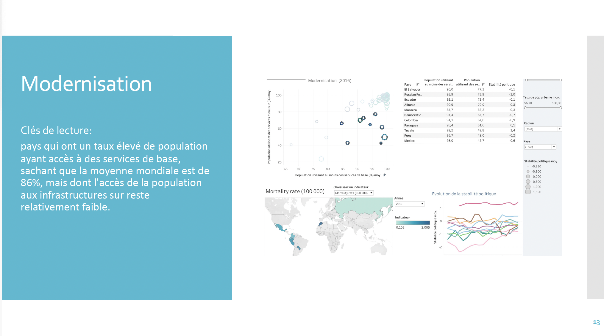
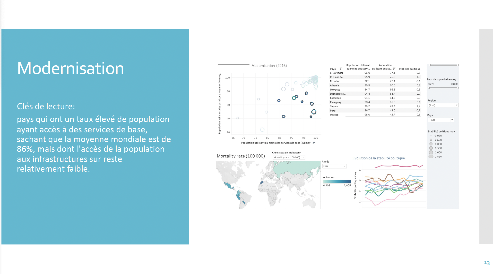

Présentation de DWFA
DWFA (Drinking Water for All) est une ONG dont l'objectif est de garantir un accès universel à l'eau potable. Ses principaux domaines d'intervention sont :
- Consulting : Conseils stratégiques pour des projets liés à l'eau potable.
- Création de nouveaux services : Développement de solutions innovantes pour l'approvisionnement en eau.
- Modernisation de services existants : Optimisation des infrastructures pour améliorer l'accès à l'eau.
Objectif du Projet
DWFA souhaite évaluer l'état de l'accès à l'eau potable dans le monde et décider du prochain projet à mettre en œuvre. Les indicateurs clés à analyser sont :
- Mortalité liée à l'eau insalubre.
- Répartition des populations rurales et urbaines.
- Stabilité politique dans les régions concernées.
- Accès aux services de base (eau, assainissement, hygiène).
- Évolution de ces indicateurs de 2000 à 2017.
Ces indicateurs permettront de cibler les pays les plus touchés par les problématiques d'accès à l'eau potable et d'orienter le prochain projet de DWFA.
Aperçu des Résultats
 
